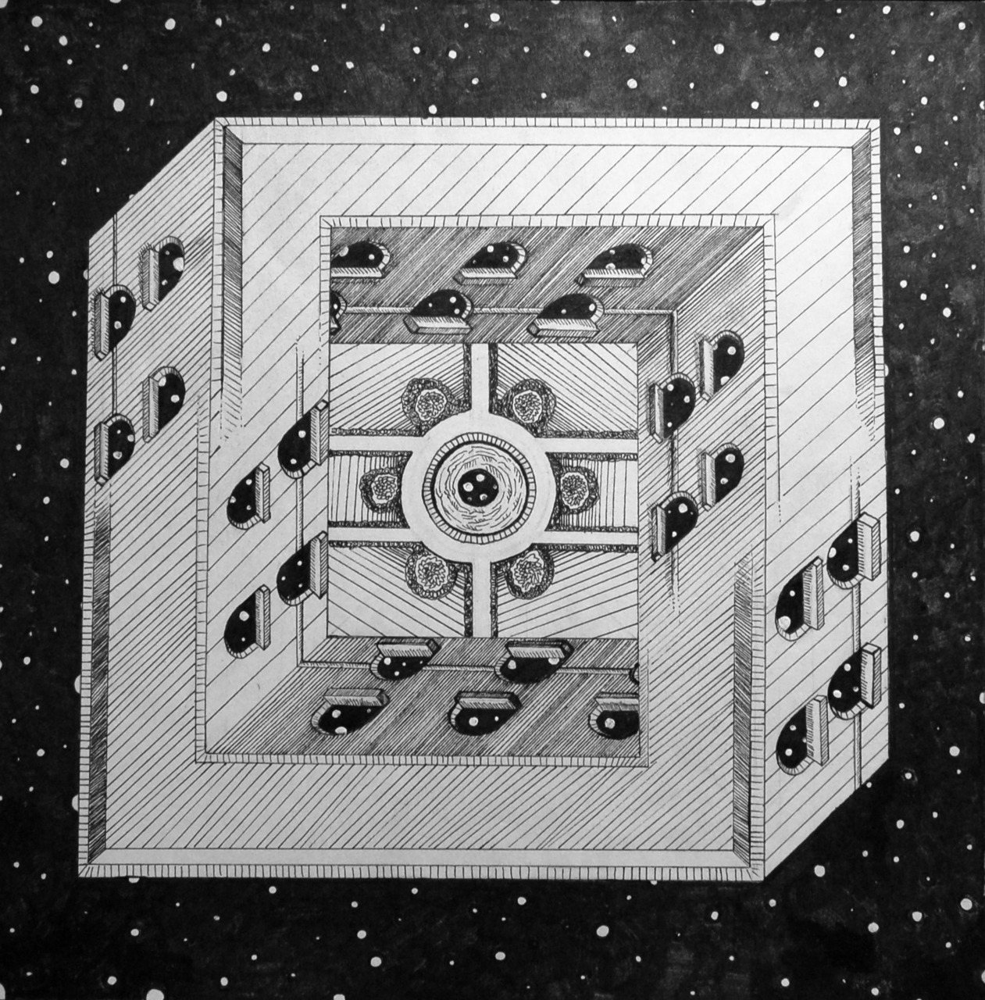

█████████ █████
███░░░░░███ ░░███
███ ░███ ████████ ███████
░███████████ ░░███░░███░░░███░
░███░░░░░███ ░███ ░░░ ░███
░███ ░███ ░███ ░███ ███
█████ █████ █████ ░░█████
░░░░░ ░░░░░ ░░░░░ ░░░░░
|
|---|
HOME |

|

|

|
|  |